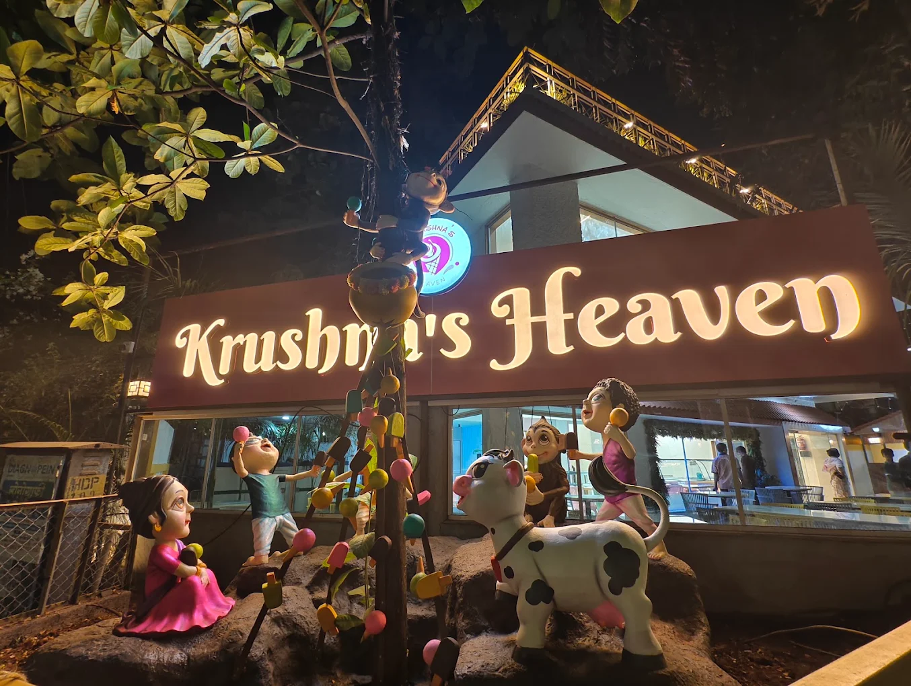

Our story
A café with five ways in.
Krushna's Heaven brings premium gelato, woodfire pizza, brews, waffles and savoury bites together under one roof.
Founding story and owner quotes still require approval
Pune's sweetmeeting place
Good food brings people closer.
Some visits begin with a scoop. Others begin with the smell of pizza from the oven, a coffee between friends, a waffle shared by the table, or a comforting savoury plate.
Krushna's Heaven gives all five cravings a home. The experience is designed to feel welcoming for families and polished enough to turn an ordinary evening into an occasion.
The menu may move across categories, but the purpose stays simple: give people a warm place to pause, choose what they love and spend a little more time together.


Inside the gelato chapter
Mr Gelato lives here.
Mr Gelato is the gelato franchise available inside Krushna's Heaven. It belongs to one part of the wider café story, alongside woodfire pizza, brews, waffles and savoury bites.
Explore gelato